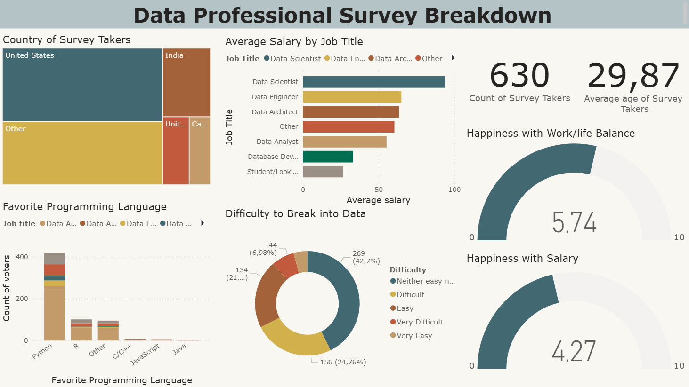
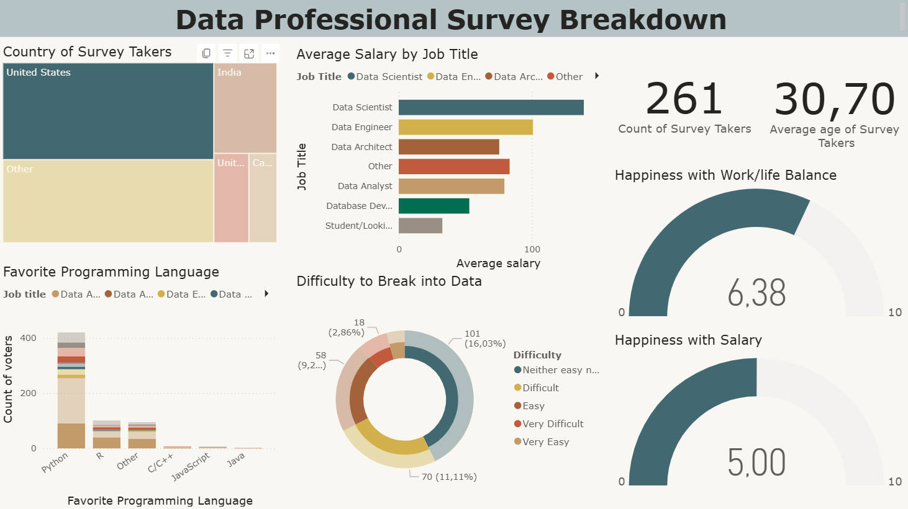
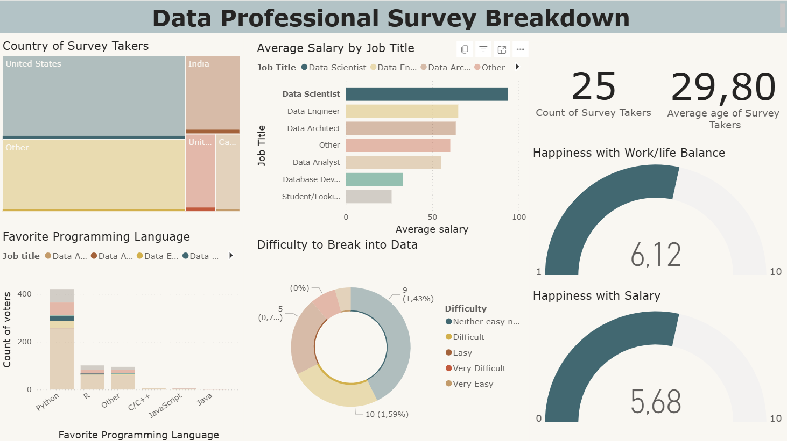

Data Professional Survey Dashboard
Power BI case study based on a public survey dataset about data-related professions.

Context & Objective
This project is based on a public dataset from a survey about data-related professions (Data Analyst, Data Scientist, Data Engineer, etc.). The dataset was provided in raw format and required data extraction and cleaning before analysis. The objective was to analyze salaries, job satisfaction, country distribution, and programming languages used, in order to identify key trends in the data industry.
Data & Tools
- Dataset: public survey dataset (~630 respondents)
- Tools: Power BI, Excel
Key Analyses
- Average salary by job title
- Job satisfaction and work-life balance
- Most popular programming languages
- Perceived difficulty of entering data-related roles
Deliverables
- Interactive Power BI dashboard (explored in Power BI Desktop / Service environment)
- Clear KPI visualization and insights summary
Note: Due to Power BI Service access restrictions, the interactive version is not publicly accessible. This page presents the project as a case study with visual previews.
Dashboard Preview
Overview – Full dashboard view.
Country filter (USA) – Example of interactive filtering by country.
Job title filter – Example of interactive filtering by role.
